Pré-requisitos:
É preciso ter o NodeJS instalado, é recomendado a versão LTS
Para ver se o NodeJS foi instalado corretamente, utilize os comandos: node -v e npm -v no seu terminal
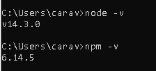
Estrutura
O desenvolvimento de um aplicativo em Electron é baseado em um aplicativo em NodeJS, logo como padrão, será necessário
um arquivo package.json. Segue a estrutura base inicial:
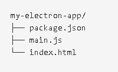
Instalando o electron:
1º Passo:
Crie uma pasta para o seu projeto no local de sua preferência e instale o electron lá:
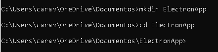
2º Passo:
Ainda no terminal, dentro da pasta do seu projeto execute o comando npm init -y
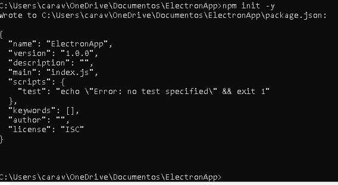
3º Passo:
Por fim, execute o comando npm i --save-dev electron
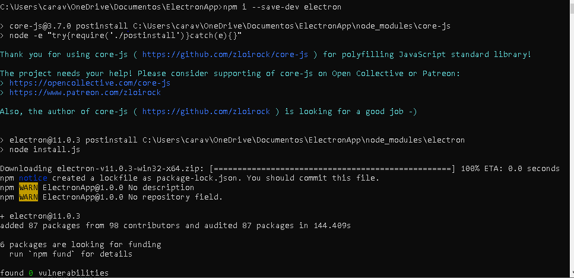
Criando os scripts nos arquivos:
Começando pelo nosso script principal main.js, ele será responsável por executar o aplicativo e cuidar de seu ciclo de vida
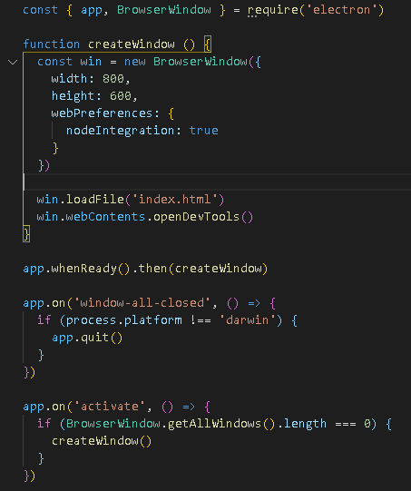
Agora, a adição do conteúdo no arquivo index.html, essa é a página que será exibida quando o aplicativo for iniciado
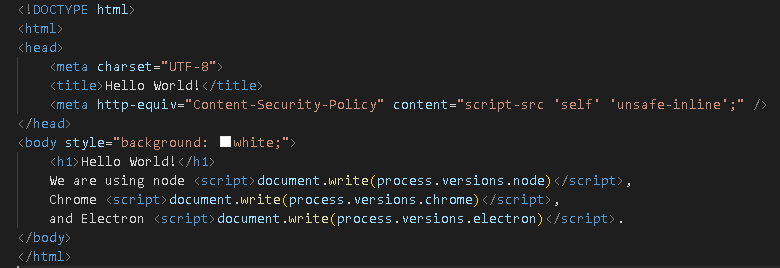
Por fim, será necessário modificar o conteúdo do arquivo package.json. Ele ficará desta forma:
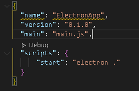
A configuração terminou, agora basta executarmos o comando npm start dentro da pasta do projeto e ele será executado
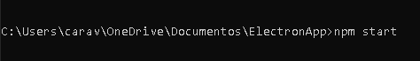
Sua aplicação deverá aparecer da seguinte maneira:
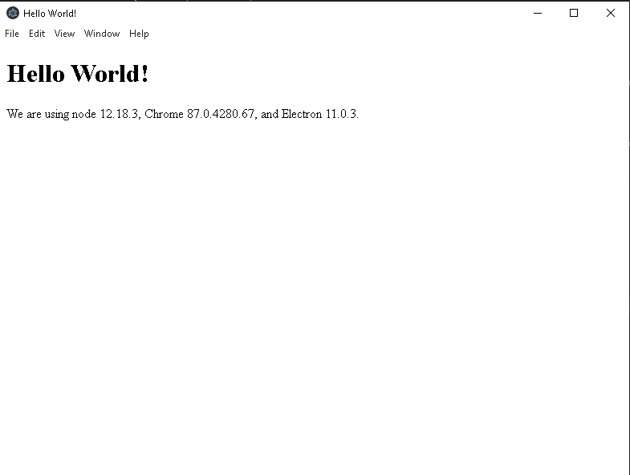
Agora vamos empacotar e tornar a aplicação distribuível
Utilizaremos o Electron Packager para a distribuição
1º Passo:
Devemos instalar o Electron Packager dentro da pasta do projeto com o comando npm install -g electron-packager(recomendado)
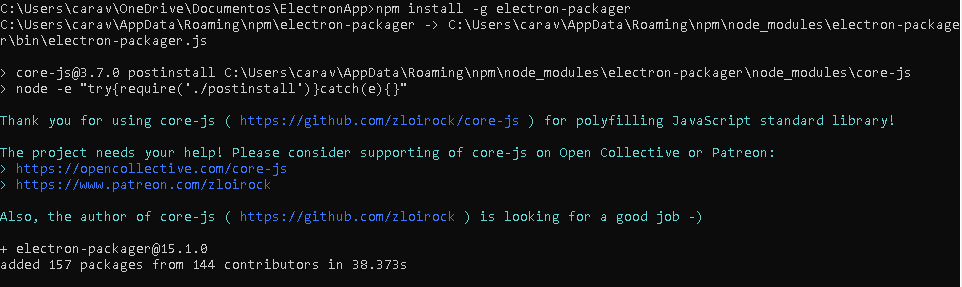
2º Passo:
Devemos executar o comando npm install electron:
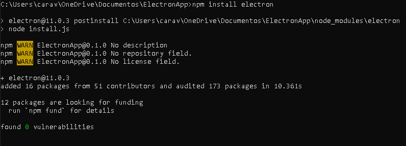
Agora, para criarmos o nosso distribuível, devemos executar o comando electron-packager . "nome do app":
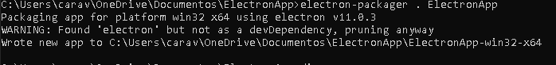
O resultado será este:
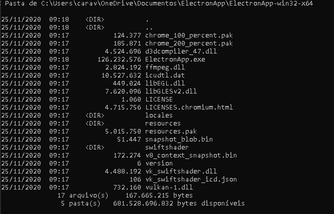
Para executar basta ir até o diretório e dar um double click no executável ou executar o comando "nomedoseuapp".exe no terminal:
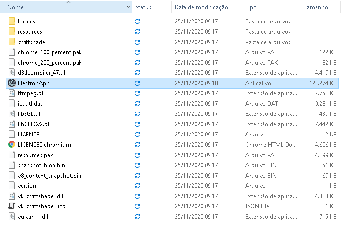
Comando:
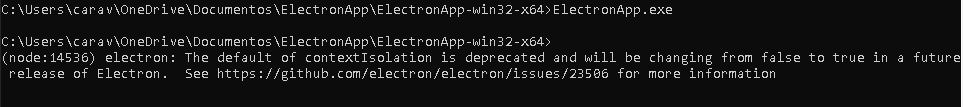
Gerando este resultado:
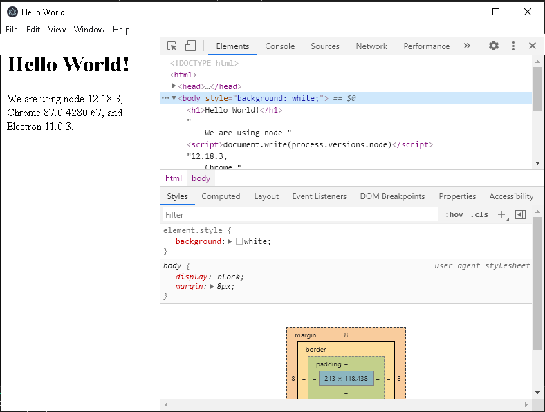